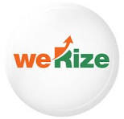

{{ p.index }}
 {{ p.company }}
{{ p.company }}
{{ p.tagline }}
I'm a PM who lives at the intersection of ambiguous problems and real users — from lending for Bharat at WeRize to payments infrastructure at Razorpay. I care about shipping, sharp thinking, and outcomes over output.

WeRize ex-RazorpayProduct Manager currently pursuing an MBA at ISB and a B.Tech from IIT Ropar, with 5 years of experience building fintech products at WeRize and Razorpay.
Owned the seller ecosystem powering WeRize's lending business — building products for 15K+ active sellers across India driving ₹1000Cr+ annual loan disbursals across personal, business, and property loans.
Also led the company's expansion into investment products by launching Digital Gold and Fixed Deposits, revamping both customer and seller app experiences, and scaling the business to ₹10Cr+ monthly sales within 6 months of launch.
Worked on banking experiences for SMEs with a focus on payouts, support journeys, and banking app for businesses.
{{ p.tagline }}
{{ current.tagline }}
{{ para }}